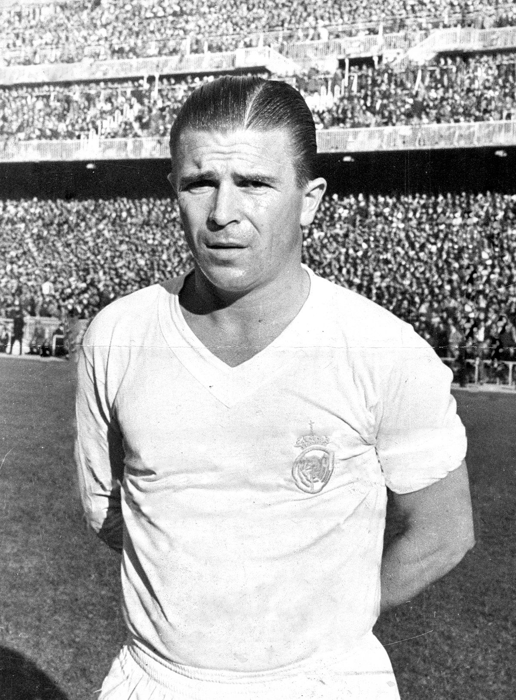

HISTORIAS DE GRANDES CLUBES
REAL MADRID
REAL MADRID

O Real Madrid Club de Fútbol, comumente referido como Real Madrid, é um clube de
futebol profissional espanhol sediado em Madrid. Compete na La Liga, a principal
competição do sistema de ligas da Espanha. Manda seus jogos em casa no Estádio
Santiago Bernabéu,[2] com capacidade para 81.044 pessoas, no centro de Madrid, desde 1947.
Fundado em 1902 como Madrid Football Club, o clube tem tradicionalmente usado
uniformes brancos como mandante desde a sua criação. O título honorífico real
foi concedido ao clube pelo rei Afonso XIII em 1920 juntamente com a coroa real no emblema.
É uma das entidades mais premiadas e reconhecidas do mundo, recebendo no
futebol o título de melhor clube do Século XX pela FIFA, em dezembro de 2000
e o primeiro entre todos clubes espanhóis,[3][4] e o título de melhor clube
 europeu do Século XX pela IFFHS, em maio de 2010.[5] Entre suas maiores conquistas,
o clube detém de 36 títulos da La Liga (um recorde), 20 títulos da Copa del Rey,
12 títulos da Supercopa da Espanha, um título da Copa da Liga Espanhola e um
título da Copa Eva Duarte. Em nível internacional, o clube venceu 14 títulos
europeus da Taça dos Clubes Campeões Europeus/Liga dos Campeões da UEFA,
sendo o maior campeão do torneio, dois títulos da Liga Europa da UEFA,
cinco títulos da Supercopa da UEFA, dois títulos da Copa Latina, um título
da Copa Ibero-Americana,[6][7][8] três títulos da Copa Intercontinental e
cinco títulos da Copa do Mundo de Clubes da FIFA.[9][10]
europeu do Século XX pela IFFHS, em maio de 2010.[5] Entre suas maiores conquistas,
o clube detém de 36 títulos da La Liga (um recorde), 20 títulos da Copa del Rey,
12 títulos da Supercopa da Espanha, um título da Copa da Liga Espanhola e um
título da Copa Eva Duarte. Em nível internacional, o clube venceu 14 títulos
europeus da Taça dos Clubes Campeões Europeus/Liga dos Campeões da UEFA,
sendo o maior campeão do torneio, dois títulos da Liga Europa da UEFA,
cinco títulos da Supercopa da UEFA, dois títulos da Copa Latina, um título
da Copa Ibero-Americana,[6][7][8] três títulos da Copa Intercontinental e
cinco títulos da Copa do Mundo de Clubes da FIFA.[9][10]
O Real Madrid é o clube de futebol mais valioso do mundo,[11][12][13] com seu
valor estimado em $3,260 bilhões e o clube de futebol mais rico do mundo em
termos de receita, com um volume de negócios anual de $ 757,3 milhões,[14]
possuindo o melhor elenco do mundo com seu valor estimado em $ 1,080 bilhões.
Segundo um estudo realizado pela empresa de consultoria britânica de valor de
marcas a Brand Finance, colocou o Real Madrid no topo de marcas mais valiosas
do futebol mundial, avaliado em € 1,419 bilhões.[15] Atualmente o Real Madrid
é primeiro colocado no Ranking de Clubes da UEFA[16] e lidera a primeira posição
no Ranking de Clubes da FIFA. O Real Madrid esteve na primeira posição do ranking
mundial de clubes da IFFHS em 2000, 2002, 2014, 2017, 2023.

Os jogadores do Real Madrid possuem um dos maiores número de conquistas do
prêmio Futebolista do Ano na Europa vencendo dez vezes, bem como o de Melhor
jogador do mundo pela FIFA vencendo quatro vezes, no FIFA Ballon d'Or vencendo
duas vezes,[17] e no FIFA The Best vencendo três vezes, com há marca de dezenove
prêmios no total. O time do Real Madrid de Alfredo Di Stéfano e Ferenc Puskas
de 1955 até 1960, é considerado por muitos no esporte o melhor time de todos
os tempos[18] vencendo a Liga dos campeões da UEFA cinco vezes consecutivas
entre 1955–56 e 1959–60,[19] nas cinco primeiras edições do torneio. O clube
recebeu o Centennial Ordem de Mérito da FIFA em 2004.[20] Somando-se a isso,
o Real Madrid está autorizado a usar um crachá de múltiplo vencedor em sua
camisa durante a Liga dos campeões da UEFA como eles ganharam mais de cinco
vezes o torneio.[21]
A principal rivalidade do time é com o clube Barcelona, onde as partidas
disputadas entre as duas equipes é chamada de El Clásico.[22] Segundo pesquisa
realizada pelo Centro de Investigaciones Sociológicas, em junho de 2014,
apontou que 37,9℅ dos espanhóis torciam para o Real Madrid,[23] com cerca de
18 milhões de torcedores, que seria a maior torcida da Espanha. É um clube com
origens ligadas a realeza espanhola e com as classes mais abastadas da Espanha,
sendo um clube associado a elite madrilenha, tornando-se um dos clubes mais bem
sucedidos do mundo e o clube mais popular e de maior sucesso na Espanha.
O Real Madrid é um dos clubes com maior número de torcedores ao redor do mundo,
se tornando uma das equipes com o maior número de seguidores e fãs nas
redes sociais e mídias entre todos os esporte, além de ser o primeiro clube
desportivo a chegar há marca de 100 milhões de fãs no Facebook.[24]
O Real Madrid foi um dos clubes fundadores do extinto G-14, um grupo que representa
os dezoito principais clubes da Europa, e sendo também um dos membros fundadores da
Associação Europeia de Clubes que substituí o G-14. Além de ser um dos fundadores
da entidade Federação Internacional de Futebol, mais conhecida popularmente como FIFA.
O Real Madrid é detentor de recordes como o de maior número de vitórias e
gols marcados em um único ano, com cerca de 51 vitórias e 178 gols marcados em 63 partidas
disputadas em 2014.[25][26] O Real Madrid detém do recorde de maior pontuação no
Campeonato Espanhol, chegando há marca de 100 pontos, sendo assim primeiro clube
espanhol a fazer esse feito inédito e entrando para a história quando o clube se
consagrou-se campeão na temporada de 2011–12,[27][28][29] e possuindo o recorde de
maior sequência de vitórias de um clube espanhol chegando há marca de 22 vitórias
consecutivas na temporada de 2014–15,[30] além do recorde de invencibilidade de um
clube espanhol chegando há marca de 40 jogos de invencibilidade na temporada de 2016–17.[31][32]